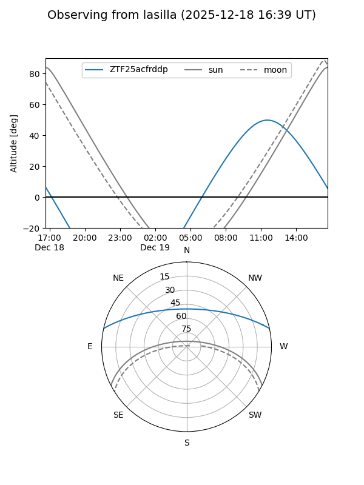
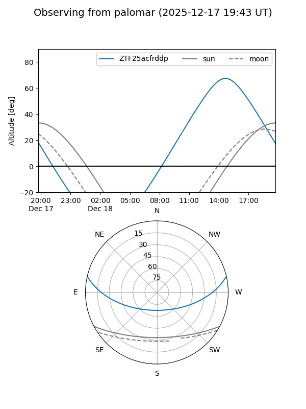

ZTF25acfrddp
Target ZTF25acfrddp at 2025-12-18 11:17
Aliases and brokers:
FINK: fink-portal.org/ZTF25acfrddp
Lasair: lasair-ztf.lsst.ac.uk/objects/ZTF25acfrddp
ALeRCE: alerce.online/object/ZTF25acfrddp
alt names
ZTF25acfrddp (ztf,fink_ztf)
Coordinates:
equatorial (ra, dec) = 190.3877,+11.00165
equatorial (HMS+DMS) = 12:41:33.04,+11:00:05.93
galactic (l, b) = (294.2530,+73.70656)
Photometry
last ztfr=20.24
1 ztfr detections
Lightcurve

Visibility


Additional plots